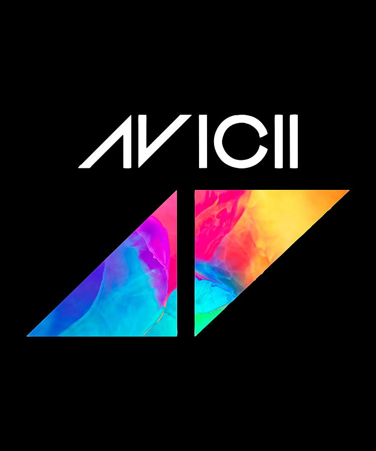

Tributo a Avicii

Tim Bergling (Estocolmo, 8 de septiembre de 1989-Mascate, 20 de abril de
2018), más conocido como Avicii, fue un DJ, remezclador y productor
musical sueco.2Avicii estudió en el Östra Reals Gymnasium, y a los 16
años, comenzó a publicar sus remixes en foros de música electrónica, lo
que lo llevó a su primer contrato discográfico. 3 Alcanzó la fama en
2011 con su sencillo «Levels». Su álbum de estudio debut, True (2013),
combinó música electrónica con elementos de múltiples géneros y recibió
críticas generalmente positivas. Alcanzó su punto máximo en la lista de
los diez primeros en más de quince países y encabezó las listas
internacionales dance.456 El primer sencillo, «Wake Me Up», encabezó
la mayoría de los mercados de música en Europa y alcanzó el número 4 en
Estados Unidos. En 2015 lanzó su segundo álbum de estudio, Stories y en
2017 lanzó un extended play, titulado Avīci (01).7Su catálogo también
incluye los sencillos «I Could Be the One» con Nicky Romero, «You Make
Me», «Hey Brother», «Addicted to You», «The Days», «The Nights»,
«Waiting for Love», «Without You» y «Lonely Together». Bergling fue
nominado para un premio Grammy por su trabajo en «Sunshine» con David
Guetta en 20128 y «Levels» en 2013. Varias publicaciones de música
reconocen a Bergling como uno de los DJs que introdujeron la música
electrónica en la radio Top 40.
A principios de 2010.910Bergling se retiró de hacer giras en 2016
debido a problemas de salud, como consecuencia del estrés y mala salud
mental durante varios años.11 El 20 de abril de 2018, Bergling se
suicidó por desangramiento en Mascate, Omán. Fue enterrado el 8 de junio
en su ciudad natal, Estocolmo. Su primer álbum póstumo titulado Tim fue
lanzado el 6 de junio de 2019.12